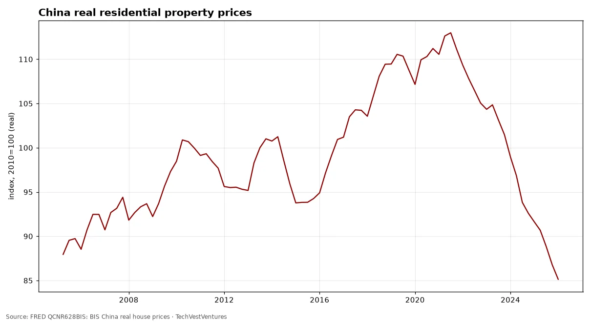

Q8. Depressions

M2 grew 5.7% y/y in Aug 2026, level $23.3 trillion. The 2020–21 surge peaked at 26.8% (Feb 2021) and was followed by the first outright M2 contraction since the 1930s (low -4.6% in Apr 2023).
Sources: FRED M2SL: Federal Reserve M2

Both indexes indexed to their peaks. The Nikkei 225 fell to about 18% of its 1989 peak and did not regain it until Feb 2024, over 34 years. The Nasdaq lost about 78% and recovered in Apr 2015. Two cases only: they show what a bubble deflation can look like, not that one is due.
Sources: FRED NIKKEI225: Nikkei Inc. Nikkei 225 FRED NASDAQCOM: Nasdaq Composite

BIS real residential property price index for China was 85.1 in Jan 2026 (2010=100), 25% below its peak of 113.0 in Jul 2021. Property and related industries are commonly estimated at a quarter or more of China's economy.

Rubles per dollar, monthly average (OECD): 84.8 in Sep 2026, peak monthly average 110.2 in Mar 2022. The 1998, 2014 and 2022 ruble collapses each followed a combination of oil weakness, sanctions or default.

The Great Depression drop (-54% by Jul 1932) dwarfs every later slump: 1938 (-32%), 1945 demobilization (-35%), 2009 (-17%) and 2020 (-19%). Latest: 0.1% below the prior peak in Sep 2026. One true depression in a century of data is too few to model its return.